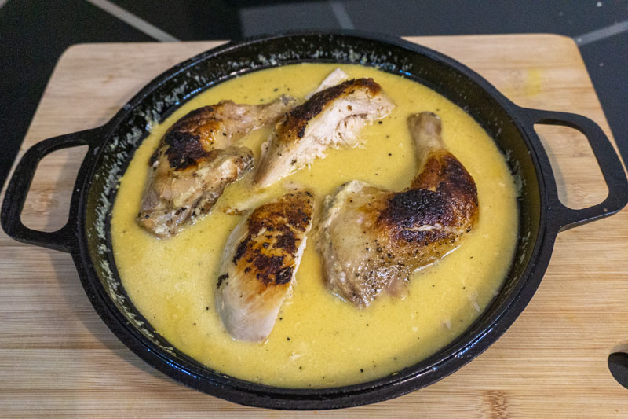

Shkmeruli

Description
Well, simply, shkmeruli is a chicken dish cooked in a garlic milk sauce. And it is absolutely delicious!
Ingredients
- Butterflied chicken
- Garlic
- Milk
- Butter
- Salt/li>
- Pepper
Steps
- Preheat oven to 200°C (400°F). Pat your chicken dry with paper towels and season liberally with salt and pepper on both sides.
- Heat one tablespoon of vegetable oil over medium heat in a large, oven-safe skillet until shimmering.
Place the chicken breast-side down in the pan and sear chicken without touching until skin is deep brown and crispy, about 8-10 minutes.
Flip chicken using tongs and cook the other side for about 5-10 more minutes.
- Remove chicken from pan, transfer to a plate, uncovered to ensure skin remains crispy. Set aside.
- In the same pan, reduce heat to medium-low and 20 grams of butter. Melt until foamy and add the garlic.
Cook, stirring constantly, until very fragrant, about 30 seconds.
- Switching to a whisk, slowly drizzle in milk while whisking constantly.
Once all of the milk is added continue whisking until it reaches a simmer.
- Return chicken to the skillet and move to the oven and finish cooking until done, or when an instant-read thermometer reads 74°C (165°F) when inserted into the thickest part of the breast, about 15-20 minutes.
- Remove from oven and take the chicken out the pan and allow to rest while finishing sauce.
Return the skillet to medium-low heat and, whisking constantly, add butter one pat at a time, whisking until one pat is completely incorporated until adding another.
Sauce should be glossy and homogenous. Simmer for about 5 minutes further until slightly thickened and reduced.
- Remove from oven and take the chicken out the pan and allow to rest while finishing sauce. Return the skillet to medium-low heat and, whisking constantly, add butter one pat at a time, whisking until one pat is completely incorporated until adding another. Sauce should be glossy and homogenous.
Simmer for about 5 minutes further until slightly thickened and reduced.
- Serve immediately, preferably with a side of crusty bread.